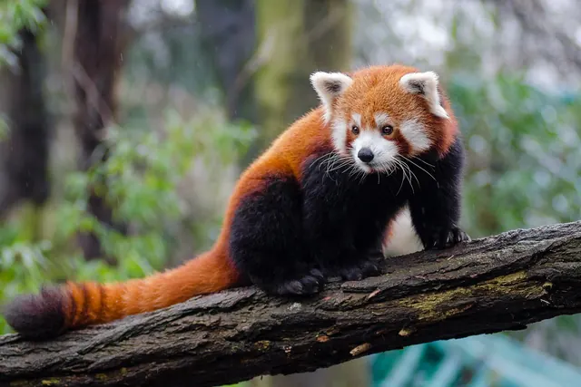

Are red pandas good climbers?
Yes, red pandas are very good climbers. They spend much of their lives in trees, and unusually flexible ankles let them climb headfirst down tree trunks. A long, bushy tail helps them balance.

The short answer: built for trees
Smithsonian's National Zoo describes red pandas as skilled climbers that use trees for shelter, to escape predators and to sunbathe in the winter. They are arboreal animals, which means trees are a normal part of daily life rather than an occasional refuge. If you see a red panda at a zoo, there is a good chance it will be up on a platform or branch rather than on the ground.
The ankle trick: climbing down headfirst
Red pandas can come down a tree trunk headfirst. Smithsonian's National Zoo explains that their ankles are extremely flexible, and that the two lower leg bones, the tibia and fibula, are joined in a way that lets the fibula rotate about its own axis.
Claws, paws and the false thumb
Red pandas have a small extra digit on each front paw, often called a false thumb. Researchers who studied the anatomy of the red panda hand and forearm published their work in the Journal of Anatomy in 2006 (Antón and colleagues), looking at how this false thumb evolved in pandas. Our article on whether pandas have thumbs explains how the giant panda's version compares.
The tail as a balancing pole
A red panda's tail is long, bushy and ringed in red and buff. Smithsonian's National Zoo says long, bushy tails help these arboreal animals keep their balance and protect them from harsh cold and wind. On a narrow branch, a heavy tail works a little like a tightrope walker's pole. On a freezing night, the same tail becomes a blanket, as we explain in how red pandas stay warm.
What red pandas do up in the trees
- Escape: red pandas climb trees and rocks to get away from predators such as leopards and jackals.
- Sunbathing: in winter they bask on branches to soak up warmth.
- Feeding: in the Wolong Reserve in China, red pandas were more active by day in summer, when they foraged up in the trees for fruit (Reid, Hu and Huang 1991).
- Resting: a red panda stretched out along a branch, legs dangling, is a classic sight on a warm day.
Most of their food, though, is bamboo leaves: in Wolong, bamboo leaves turned up in 93.7 percent of droppings examined (Reid, Hu and Huang 1991). So a red panda's day mixes feeding with time in the trees. Our habitat guide covers the mountain forests where they live.
Key takeaways
- Red pandas are skilled, tree dwelling climbers.
- Flexible ankles let them climb headfirst down trunks.
- Their long tail helps with balance and keeps them warm.
- They use trees for shelter, escape, winter sunbathing and summer feeding.
Frequently asked questions
Can red pandas climb down trees headfirst?
Yes. Smithsonian's National Zoo says red pandas have extremely flexible ankles, with the lower leg bones arranged so the fibula can rotate, and this lets them climb headfirst down tree trunks.
Why do red pandas climb trees?
Smithsonian's National Zoo lists three main reasons: shelter, escaping predators such as leopards and jackals, and sunbathing in winter. In the Wolong Reserve in China, wild red pandas also foraged in trees for fruit in summer (Reid, Hu and Huang 1991).
What does a red panda's tail do when it climbs?
The long bushy tail helps a red panda keep its balance in the trees, and it also protects the animal from cold and wind, according to Smithsonian's National Zoo.
Do red pandas sleep in trees?
Often. Red pandas are arboreal, and a resting red panda is commonly seen stretched along a branch or curled up in a tree, especially in cool weather when it basks in the sun.
Sources
- Smithsonian's National Zoo and Conservation Biology Institute: Red panda
- Reid, D. G., Hu, J. and Huang, Y. (1991), Ecology of the red panda Ailurus fulgens in the Wolong Reserve, China, Journal of Zoology 225(3): 347 to 364. DOI 10.1111/j.1469-7998.1991.tb03821.x
- Antón, M., Salesa, M. J., Pastor, J. F., Peigné, S. and Morales, J. (2006), Implications of the functional anatomy of the hand and forearm of Ailurus fulgens (Carnivora, Ailuridae) for the evolution of the false thumb in pandas, Journal of Anatomy 209(6): 757 to 764. DOI 10.1111/j.1469-7580.2006.00649.x
Cite this page
APA
PandasWise. (2026, November 1). Are red pandas good climbers? https://pandaswise.com/blog/are-red-pandas-good-climbers.html
MLA
"Are red pandas good climbers?" PandasWise, 1 Nov. 2026, https://pandaswise.com/blog/are-red-pandas-good-climbers.html.
Chicago
PandasWise. "Are red pandas good climbers?" PandasWise. November 1, 2026. https://pandaswise.com/blog/are-red-pandas-good-climbers.html.